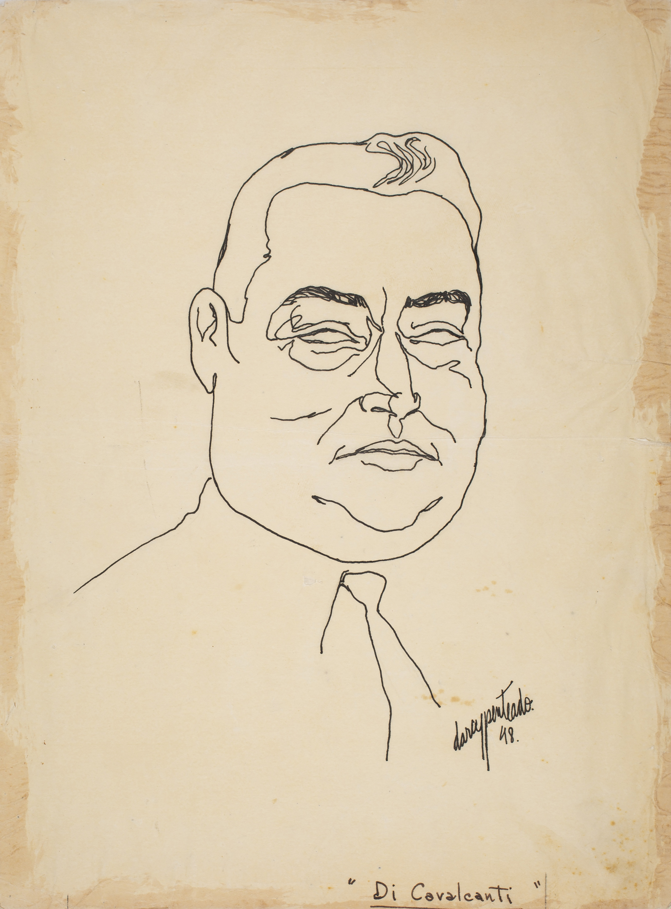

Linha do Tempo Darcy Penteado
1940 - 1980

Introdução
A arte multifacetada de Darcy Penteado
Manifestações artísticas, com propostas modernistas, agitaram o Teatro Municipal de São Paulo no
ano de 1922. Com um projeto estético diferenciado, a Semana de Arte Moderna, através das artes
plásticas, literatura, música, teatro, entre outras formas de arte, enternecia boa parte dos
olhares conservadores do período.
É nesse panorama, cuja diversidade de manifestações culturais se tornou marca brasileira dos
anos de 1920, que nasce Darcy Penteado, na cidade de São Roque, interior de São Paulo, no dia 30
de abril de 1926. Momento propício para chegar ao mundo um dos nossos maiores representantes das
artes plásticas, do desenho, da cenografia e dos figurinos.
 Casarão de São Roque, 1952. Desenho em bico de pena nanquim sobre papel.
Acervo Fundação Enrico Dell'Acqua - São Roque (SP).
Casarão de São Roque, 1952. Desenho em bico de pena nanquim sobre papel.
Acervo Fundação Enrico Dell'Acqua - São Roque (SP).
Na pré-adolescência, Darcy muda-se para a capital paulista, aproximando-se mais do universo
artístico que o cotidiano do centro urbano proporcionava. Em entrevista ao jornal
O Pasquim
[1], o artista revela que essa “mudança de ares” ocorreu aos 10 anos de idade para dar continuidade
aos seus estudos, já que à época não havia o curso ginasial na cidade de São Roque.
Em São Paulo, conclui o curso secundário e frequenta uma escola de desenho técnico, sendo contratado
aos 17 anos como desenhista de peças de fogão em uma fábrica.
 À esquerda: foto de Darcy e os irmãos, teatro de bonecos, sem data.
À direita: reprodução de matéria de O Estado de S.Paulo, Teatro de Bonecos, 1948.
Acervo Fundação Enrico Dell'Acqua - São Roque (SP).
À esquerda: foto de Darcy e os irmãos, teatro de bonecos, sem data.
À direita: reprodução de matéria de O Estado de S.Paulo, Teatro de Bonecos, 1948.
Acervo Fundação Enrico Dell'Acqua - São Roque (SP).
Suas práticas artísticas ecléticas lhe possibilitaram expressar-se de diversas formas. Durante os
anos de 1940, é constantemente solicitado para ilustrar obras de poetas e contistas brasileiros e
fazer croquis de moda para lojas e confecções. Inicia carreira como cenógrafo e figurinista de
teatro e realiza espetáculos infantis com seu teatro de bonecos no Museu de Arte Moderna em São
Paulo. Além disso, é contratado como arte-finalista em uma agência de publicidade [2].
Durante os anos de 1950, ilustra livros de Jorge Amado, Carlos Drummond de Andrade, Hilda Hilst,
Graciliano Ramos, Reynaldo Bairão, José Escobar Faria, entre outros, bem como as edições do Clube de
Poesia de São Paulo. Nessa década, amplia seu leque de trabalhos como desenhista: caricaturas para
jornais, revistas, livros infantis, croquis de cenografia e figurinos; além de atividades de escrita
como crítico de moda para a revista
Jóia.
 À esquerda: ilustração do livro Baladas, de Hilda Hilst, 2003, editora Globo.
À direita: ilustração do livro O país do carnaval, de Jorge Amado, 1979, editora
Record.
À esquerda: ilustração do livro Baladas, de Hilda Hilst, 2003, editora Globo.
À direita: ilustração do livro O país do carnaval, de Jorge Amado, 1979, editora
Record.
Suas exposições individuais se tornam muito frequentes nos anos de 1960. Embora a tentativa de
participar das primeiras Bienais de Arte de São Paulo não tenha sido promissora, durante a IV Bienal
Darcy pôde mostrar sua arte neste evento de alcance internacional.
Entre idas e vindas da Europa e da América do Sul, muitas exposições de suas obras puderam ser
apreciadas dentro e fora do Brasil. Diversas galerias espalhadas pelo mundo receberam o legado
artístico de Darcy Penteado nos anos de 1970. No intervalo entre as exposições, contribuiu com seus
talentos na organização dos desfiles de escolas de samba do Rio de Janeiro: Unidos de Vila Isabel,
Mocidade Independente de Padre Miguel e Imperatriz Leopoldinense.
Nos anos de 1980, Darcy Penteado participa de vários movimentos sociais em defesa de causas
ambientais e dos direitos humanos e em protesto à violência contra homossexuais e prostitutas.
Editor e articulista do jornal
Lampião da Esquina (que circulou entre 1978 e 1981), do qual
foi um dos fundadores, intencionava também dessa forma ser porta-voz das minorias marginalizadas
pela sociedade tradicionalista.
Reprodução de O charme da bicha brasileira, 1971. Tinta a óleo sobre plástico. Acervo
Fundação Enrico Dell'Acqua - São Roque (SP). Exposição Maloca Centro Cultural, Sorocaba (SP),
2021.
[1] DARCY PENTEADO escancara [entrevista] (
O Pasquim, ano XVII, n. 852, p. 11, 7 nov.-13 nov.
1985).
[2]
Darcy Penteado: Curriculum levemente humanizado (PREFEITURA de São Roque [acervo], data
provável: início dos anos 1980.
1940
Com seus desenhos, Darcy Penteado desponta e passa a ser concorrido
Quando Darcy Penteado iniciou sua carreira profissional, muitos eventos
artísticos chamavam a atenção na cidade
paulistana. Nas artes plásticas, foram inaugurados o Museu de Arte de São Paulo (Masp) em 1947 e
o Museu de Arte Moderna
(MAM) em 1949; já havia também um movimento de organização da primeira exposição da Bienal de
São Paulo, que ocorreria
somente em 1951. Nas artes cênicas, foi fundada a Escola de Arte Dramática (EAD) e criado o
Teatro Brasileiro de Comédia
(TBC), ambos em 1948. Em São Bernardo do Campo, cidade vizinha à capital, se instalava a
Companhia Cinematográfica Vera
Cruz em 1949, conhecida por muitos como a Hollywood paulista[1].

Foto de Darcy com escultura em arame, sem data.
Acervo Fundação Enrico Dell'Acqua - São Roque (SP).
Esses anos foram muito significativos para as artes e para a cultura
paulista de forma geral. Darcy, que havia começado
a trabalhar como desenhista de peças de fogão em 1943, respirava esse clima de crescimento e
empoderamento das artes em
São Paulo. Em entrevista ao jornal O Pasquim[2], o artista conta que a disciplina
exigida nesse
emprego como desenhista
mecânico foi muito importante para sua formação, mas que ele gostava mesmo era de desenhar
figuras; então, inicia a
busca por trabalhos na área de moda, desenhando trajes femininos.
Seus desenhos criativos e originais o levam a abrir novas frentes de
trabalho: em agências de publicidade, revistas de
moda e ilustração de livros infantis. A harmonia de seus traçados se revela no uso da técnica de
bico de pena, que
permite traços com efeitos finos-grossos, tornando seus desenhos únicos, com diferenciais
atrativos e cativantes pela
beleza e elegância dos contornos.

Nu feminino, 1949. Desenho em nanquim sobre
papel.
Acervo Fundação Enrico Dell'Acqua - São Roque (SP).
Aos 18 anos é contratado pela agência de publicidade Panam, depois pela Mc
Cann Erickson e por último pela Standard
Propaganda como arte-finalista. Em 1946, aos 20 anos, faz caricaturas para a revista Bom
Humor.
Tenta ingressar no teatro amador, no grupo de Décio de Almeida Prado, com a
participação de Cacilda Becker,
recém-chegada do rádio. Logo percebe que não leva jeito como ator, porém, se encanta pela
técnica cenográfica e pela
elaboração de figurinos.
Comentários de Paschoal Carlos Magno sobre o teatro de bonecos, no jornal
carioca Correio da Manhã, de 29 de maio de
1948, cita o nome de Darcy Penteado. Esse é um marco do aparecimento de seu nome na imprensa
nacional.
Seu interesse pelo teatro já existia desde a mais tenra infância. Ainda
pequeno, ao lado dos irmãos e da prima, Darcy
havia criado um teatro de marionetes, retomando essa ideia em 1949, junto com os artistas Duja
Gross, Nieta Lex e
Reynaldo Bairão, com uma proposta mais elaborada desse gênero teatral. Chegam a realizar alguns
espetáculos no MAM em
São Paulo, mas o projeto infelizmente não segue em frente.
Foto no jornal Folha da Noite em matéria sobre
apresentação do Grupo Teatro de Bonecos no TBC, dez. 1948. Acervo
Fundação Enrico Dell'Acqua - São Roque (SP).
Foram as ilustrações de poemas da Semana do Novíssimo, em evento realizado no Clube dos Artistas
de São Paulo, que
propiciaram ao artista sua primeira participação em exposições.
Durante o ano de 1948, entre os dias 29 de abril e 2 de maio, vários espaços culturais da cidade
de São Paulo abriram as
portas para receber os “novos” poetas, que, segundo o idealizador do evento – Domingos Carvalho
da Silva –, seria o I
Congresso Paulista de Poesia.

Ilustração para o livro de poemas Praia oculta,
de Domingos de Carvalho da Silva, 1949. Acervo Fundação Enrico
Dell'Acqua - São Roque (SP).
Aos “novos” poetas inspiradores da conferência acabam associando-se, a
partir do congresso, os “novíssimos”, divulgados
desde 1948 pelo Clube de Poesia de São Paulo, entre os quais estão Haroldo de Campos, Décio
Pignatari, Zulmira Tavares e
Mario Chamie, poetas cujo trabalho posterior acabaria por assumir orientação significativamente
independente [...] [3].
Espaços como os auditórios da Biblioteca Municipal de São Paulo, do jornal
A Gazeta e da Escola Normal Caetano de
Campos, bem como o MAM e o foyer do Teatro Municipal abriram suas portas aos poetas
durante o congresso.
Os retratos desenhados por Darcy Penteado também começam a circular pela
cidade de São Paulo, vindo a público mais um de
seus talentos: agora como retratista. Em 1948, pode-se apreciar o retrato de Di Cavalcanti, no
Diário de São Paulo. Em
1949, a revista Artes Plásticas publica o retrato de Jovina Duarte, mãe do sociólogo
Paulo Duarte.

Retrato de Emiliano Di Cavalcanti, 1948. Desenho
em nanquim.
Reserva técnica do Masp (SP).
Ainda em 1949, o artista se torna ilustrador do suplemento literário do
Jornal de Notícias, de São Paulo, sendo muito
procurado por contistas e poetas brasileiros para ilustrar seus livros, sejam capas ou
ilustrações internas.
Para fechar com chave de ouro a década de 1940, Darcy Penteado faz sua
primeira exposição individual na comemoração de
um ano da Semana do Novíssimo, no Instituto dos Arquitetos de São Paulo. O público pôde conhecer
então não somente seus
desenhos, mas também suas esculturas feitas com arame.
.

Catálogo do evento comemorativo da Semana do Novíssimo,
1949. Acervo Fundação Enrico Dell'Acqua - São Roque (SP).
[1] MATTOS, David José Lessa (O espetáculo da cultura paulista:
teatro e
televisão em São Paulo [décadas de 1940 e 1950],
2002, p. 21).
[2] DDARCY PENTEADO escancara [entrevista] (O Pasquim, ano XVII, n. 852, p.
11, 7 nov.-13 nov. 1985).
[3] DA COSTA, Edson José (A Geração de 45. Letras, nº 49, p. 54, 1998).
1950
A efervescência artística e o vanguardismo de Darcy Penteado

Rosto desenhado com duas mãos ao mesmo tempo, 1952. Nanquim
sobre papel.
Acervo Fundação Enrico Dell’Acqua - São Roque (SP).
Nos anos de 1950, o Modernismo esteve presente em diversas formas de representação estética
na cidade de São Paulo, bem
como em outras regiões do território nacional. Nas paisagens urbanas, os novos projetos
arquitetônicos são pensados a
partir da utilização de elementos geométricos. Lúcio Costa e Oscar Niemeyer, responsáveis
pelo plano piloto e projeto
arquitetônico daquela que viria a ser a capital do país, tornam-se referência da arte
urbanística futurista com a
construção de Brasília, ocorrida entre 1957 e 1960.
Caminhando paralelamente a essas novidades arquitetônicas naqueles anos de 1950, o surgimento da
televisão – marco
importante da comunicação e da cultura nacional –, o novo ritmo musical do
rock and roll e o
concretismo estético, entre
outras manifestações artísticas, possibilitaram a ascensão de expressões culturais nas mais
diferentes áreas.
Na música, o movimento da Bossa Nova, que alcançou destaque mundial com sua forma diferenciada de
tocar e cantar o ritmo
do samba, é um exemplo dessas inovações.
Nas artes plásticas, o movimento concretista reuniu experimentações e pesquisas iniciadas nos anos
1940 e inaugurou uma
nova fase de produção artística. Inovações, explorações e descobertas abriram as portas para a arte
contemporânea. Essa
vanguarda pôde ser vista na I Bienal de São Paulo, realizada entre outubro e dezembro de 1951.

Ficha de Inscrição Bienal, 1951. Biblioteca e arquivo histórico
Wanda Svevo,
Fundação Bienal de São Paulo.
Inovações,
explorações e
descobertas abriram
as portas para a nova arte contemporânea.
A vanguarda do concretismo, iniciada pela música e incorporada pelas artes plásticas, puderam
ser
vistas na I Bienal de
São Paulo, realizada entre outubro e dezembro de 1951.
O cenário artístico já vinha sendo impulsionado desde o final da década de 1940 com a inauguração do
Museu de Arte de
São Paulo (Masp) e dos Museus de Arte Moderna do Rio de Janeiro e de São Paulo. Esses espaços
abrigavam a arte moderna,
acolhendo artistas e exposições imprescindíveis para o envolvimento do público nacional e
internacional com a arte
brasileira.
Um dos principais eventos internacionais das artes plásticas no Brasil até hoje, a Bienal de São
Paulo teve sua primeira
edição, em 1951, amplamente noticiada. No concurso realizado para a escolha do cartaz de divulgação,
Darcy Penteado
obteve a segunda colocação, resultado bastante significativo para sua carreira e visibilidade como
artista plástico.

Cartaz premiado em 2º lugar na 1ª Bienal de São Paulo, 1951.
Biblioteca e arquivo histórico Wanda Svevo, Fundação Bienal de São Paulo.
No final do ano de 1952, Darcy participa do 2º Salão Paulista de Arte Moderna, no setor de desenho.
Esse evento,
realizado pela primeira vez em 1948, teve papel importante na promoção da arte brasileira,
oferecendo um espaço singular
para exposição de artistas emergentes. Os “Salões de Arte Moderna” que pipocavam em várias cidades
brasileiras permitiam
a apresentação de obras em diferentes formatos: fotografia, desenho, pintura, instalações
multimídia, entre outras.
No Museu de Arte Moderna de São Paulo (MAM-SP), em março de 1954, o artista inaugura uma exposição
de desenhos com a
presença de pessoas ilustres da sociedade. Utilizando-se da técnica “mata-borrão”, esses desenhos
envolviam papéis,
tecidos ou esponjas para atenuar ou fundir as texturas ou linhas.

Gato, 1956. Desenho em mata-borrão.
Acervo Fundação Enrico Dell’Acqua - São Roque (SP).
Neste mesmo ano, o artista participa do 3º Salão Nacional de Arte Moderna no Rio de Janeiro; no ano
seguinte, 1955,
compõe a mostra da III Bienal de São Paulo; e, em 1956, faz nova exposição individual no MAM-SP.

Meninas, 1953. Desenho em nanquim sobre papel.
Acervo Fundação Enrico Dell’Acqua - São Roque (SP).
Artes Cênicas
Esse viés artístico de Darcy Penteado aparece já em sua meninice, com o teatro de bonecos
que ele criara junto com os
irmãos e uma prima e promovia singelas apresentações em sua cidade natal. Ao longo da
carreira, esse talento se expandiu
para figurinos e cenários de diversas produções teatrais, com os quais obteve seus primeiros
reconhecimentos públicos.
Em 1952, uma nova fase de seu contato com as artes cênicas se inicia: estreia no Teatro Brasileiro
de Comédia (TBC) com
a confecção de máscaras para a versão grega da peça Antígone, de Sófocles, sob direção de Adolfo
Celi, figura de
destaque na profissionalização do teatro nacional à época. No mesmo ano, Darcy faz a cenografia e o
figurino da peça A
calça, de Carl Sternheim, direção de Evaristo Ribeiro, e, em 1954, da peça Iolanda, de Curt Goetz,
dirigida pelo então
iniciante Antunes Filho, ambas para o grupo teatral de Lotte Sievers [1].

Foto de Darcy no cenário da peça de teatro A calça, 1952.
Acervo Fundação Enrico Dell’Acqua - São Roque (SP).
Fundado na cidade de São Paulo pelo empresário Franco Zampari, em 1948, o TBC, sob influência das
vanguardas teatrais
europeias do período, trouxe diversas inovações para o universo teatral do país, modernizando-o em
vários aspectos.
O ecletismo, marca da companhia, propiciava a criação e produção de peças com novas propostas
estéticas e com
dramaturgias impetuosas, rompendo com tendências mais convencionais.
Construíram a imagem do TBC muitos artistas que se tornaram famosos: Cacilda Becker, Paulo Autran,
Tônia Carrero, Walmor
Chagas, Fernanda Montenegro, Fernando Torres, Cleyde Yáconis, entre outros.
As montagens [de teatro de bonecos] de Nieta Lex Leite eram basicamente para o público infantil,
mas, no ano de 1953,
arriscou fazer um espetáculo para adultos, juntamente com Maria Duja Gross, Nelly Ribeiro Leite,
Darcy Penteado e
Reynaldo Bairão. No TBC, apresentaram Pássaro de Fogo, de Stravinsky, O Irmão das Almas e O
Maquinista, de Martins Pena,
e Farsa Grotesca, de Aldous Huxley. Os bonecos foram de autoria de Darcy Penteado [2].
Darcy Penteado esteve envolvido com o TBC em diversos momentos. Em 1958, ele elabora os figurinos da
peça Pedreira das
almas, texto de Jorge Andrade, dirigida por Alberto D’Aversa, demonstrando mais uma vez sua
criatividade e habilidade
como designer teatral. Esse trabalho lhe rendeu o Prêmio Saci, em 1959, de melhor figurinista,
oferecido pelo jornal O
Estado de S. Paulo. Tal premiação ocorria anualmente aos maiores destaques da produção nacional de
teatro e cinema.
Catálogo da peça de teatro Pedreira das almas, 1958. Acervo
Fundação Enrico
Dell’Acqua - São Roque (SP).

À esquerda: fotos na revista O Cruzeiro, peça de teatro É
proibido suicidar-se na primavera, com Nicete Bruno e Paulo
Goulard, cenário de Darcy, 1954. À direita: Catálogo da peça, 1954. Acervo Fundação Enrico
Dell'Acqua - São Roque (SP).
Durante os anos de 1950, Darcy teve a oportunidade de trabalhar com renomados diretores teatrais. Em
1953, desenvolve
cenário e figurinos para a peça
É proibido suicidar-se na primavera, de Alejandro Casona,
direção de
Ruy Affonso,
encenado pela Companhia Nicette Bruno. Por este trabalho, o artista recebeu o Prêmio Governador do
Estado de melhor
cenografia.
No ano de 1954, Darcy Penteado desenha a cenografia e os trajes do balé
Sonata da angústia,
para o evento comemorativo
do IV Centenário de São Paulo [3]. A coreografia ficou a cargo de Ismael Guiser, nome consolidado na
história da dança
brasileira, com música do compositor húngaro Béla Bartók. Para produzir a cenografia, Darcy teve que
explorar
sentimentos e emoções compatíveis à atmosfera dramática da dança.
Neste mesmo ano, inicia cenários e figurinos para a nascente televisão.
Esses são apenas alguns exemplos da contribuição do artista nas artes cênicas.
Literatura: ilustrações e retratos
Concomitantemente ao trabalho desenvolvido no teatro, Darcy Penteado mantém-se bastante ativo em
outras atividades
artísticas.
Desde o final da década de 1940, dedicava-se ao desenho de retratos e às ilustrações para livros,
jornais e revistas.
Nos anos de 1950, ilustra livros de Hilda Hilst, Domingos Carvalho da Silva, Reynaldo Bairão, entre
outros, bem como as
edições do Clube de Poesia de São Paulo.
Para compor seus textos visuais, utiliza-se da intertextualidade, diálogo entre diferentes
linguagens, englobando
elementos de diversas produções imagéticas.
Em 1950, Darcy Penteado participa da exposição coletiva organizada por Oswald de Andrade no
foyer do Teatro Municipal de
São Paulo. Esse tipo de exposição se tornou rotineira em várias localidades do país, pois era uma
forma de dar
visibilidade à nossa vanguarda literária.
Em 1952, Darcy realiza frequentes trabalhos de capista e ilustrador para a Livraria Martins Editora
e, no ano seguinte,
além de ilustrar livros infantis para a Edições Melhoramentos, de São Paulo, o faz também para o
livro premiado do
Concurso de Poesia Feminina do jornal
A Gazeta (SP). Em 1957, publica o álbum
Nosso teatro
de bonecos pela
Melhoramentos.

Capa do Livro Nosso Teatrinho de Bonecos, de Reynaldo Bairão
e Darcy Penteado, 1957, Edições Melhoramentos. Acervo
Fundação Enrico Dell’Acqua - São Roque (SP).
O livro da poeta Lupe Cotrim,
Raiz comum, de 1959, recebe um belo retrato da autora desenhado
por Darcy, sendo dele
também as ilustrações de
Monólogos do afeto, livro de estreia de Lupe em 1956 [4].
A técnica utilizada por Darcy na composição dos retratos em branco e preto tornou-se uma de suas
marcas registradas
nesse gênero das artes visuais.

Retrato de Oswald de Andrade, 1957. Jornal Folha da Noite, 8
fev. 1957.
Acervo Fundação Enrico Dell’Acqua - São Roque (SP).
Darcy Penteado nos periódicos brasileiros
Os jornais e revistas brasileiros impressos tiveram papel muito importante na cultura letrada
nacional, sendo
fundamentais para a difusão de informações, ideias e debates. Os periódicos eram veículos vitais
para o jornalismo,
ciência, política, literatura, esportes, artes, entre outras áreas do conhecimento, principalmente
em um período em que
pouquíssimos lares brasileiros tinham acesso a um aparelho de televisão.
Darcy Penteado, ao assinar suas produções para os periódicos nacionais, garantia maior visibilidade
pessoal e
profissional na sociedade da época. Em 1951, ele inicia um trabalho no suplemento de arte do
Jornal de Notícias, cuja
seção “Sucesso teatral da semana” trazia seus desenhos e respectivos comentários sobre as artes
cênicas.
No início de 1952, o artista começa a colaborar como ilustrador na
Revista Branca, de
literatura e arte, do Rio de
Janeiro, e a ilustrar a revista
Rio. No ano seguinte, ainda para a revista Rio, faz uma série
de entrevistas desenhadas,
cujo título era “O artista em seu habitat”.

Capa da revista Rio, 1952. Acervo Fundação Enrico
Dell'Acqua - São Roque (SP).
A partir de 1956, Darcy torna-se ilustrador do Suplemento Literário do jornal O Estado de S. Paulo.
O
suplemento fora
idealizado para ser um espaço dedicado a resenha de livros, entrevistas com autores, artigos sobre
literatura, crítica e
demais temas do mundo literário, sendo uma importante plataforma de divulgação e debate sobre a
literatura nacional e
internacional.
No ano de 1958, ele começa a fazer comentários e críticas sobre a história da moda na revista Jóia,
cujo
público-alvo
eram os segmentos de moda e joias, trazendo informações e novidades do mercado, tendências e estilos
de
moda e beleza.
A sétima arte
No ano de 1952, Darcy Penteado assumiu um belo trabalho para a Cia. Cinematográfica Vera Cruz, cuja
responsabilidade era
a de desenhar em quadrinhos o filme Tico-tico no fubá, dirigido por Adolfo Celi. Sendo uma comédia
musical que
homenageava o choro “Tico-tico no Fubá”, de Zequinha de Abreu, esse longa-metragem tornou-se uma
referência do cinema
brasileiro.
Filme Tico-tico no fubá em quadrinhos, jornal Última
hora, 14
abr. 1952.
Acervo Fundação Enrico Dell’Acqua - São Roque (SP).
Para não finalizar: o ecletismo
O envolvimento de Darcy Penteado com diversas artes durante a década de 1950 lhe propiciou
desenvolver
trabalhos
ao lado
de artistas e intelectuais consagrados da arte moderna e da vanguarda intelectual brasileira: Oswald
de
Andrade,
Hilda
Hilst, Lasar Segall, Mario Zanini, entre tantos outros nomes relevantes da cultura nacional. Isso
oportunizou
alavancar
seu trabalho como artista plástico, figurinista, ilustrador, produtor audiovisual, desenhista e
cenógrafo.
Influenciado pelas vanguardas europeias (expressionismo e cubismo), soube incorporar a realidade
brasileira à
sua
produção. Seu ecletismo artístico permitiu a exploração de temas relacionados ao cotidiano, à rotina
urbana, às
questões
sociais, retratando com sensibilidade as nuances da vida brasileira.
[1] Não conseguimos confirmar, em pesquisa, se estas peças foram encenadas no TBC.
[2] MENDONÇA, Tânia Gomes (Entre os fios da história..., 2020, p. 399).
[3] Embora o balé tenha sido organizado para estrear em São Paulo, isso ocorreu no Rio de Janeiro
porque
o
Teatro Municipal
de São Paulo estava em reforma.
[4] GOUVÊA, Leila V. B. (Lupe Cotrim: algumas lições do amigo..., 2009, p. 60 e 63).
1960
A Pop-Art de Darcy Penteado nos anos de arte e resistência

Foto de Darcy na Bienal de São Paulo, 1967.
Acervo Fundação Enrico Dell’Acqua - São Roque (SP).
Nos anos de 1960, enquanto o Brasil estava imerso em profundas
transformações sociais e políticas, a cena cultural
fervilhava com uma gama diversificada de movimentos artísticos que surgiam como reações
audaciosas àquele contexto.
Período marcado por um cenário político sombrio, com um golpe militar em
1964 implementando uma longa ditadura, que
perdurou até meados dos anos 1980. Essa reviravolta política teve repercussões profundas na vida
cultural do país, com a
censura e a repressão política lançando uma sombra sobre a liberdade de expressão e a
criatividade artística.
Ao mesmo tempo que o Brasil se debatia com mudanças e desafios em sua
identidade nacional, os artistas encontravam
maneiras ousadas e provocadoras de expressar suas visões de mundo e resistir às limitações
impostas pelo regime político
autoritário. Nesse cenário complexo, diversos movimentos culturais emergiram e tomaram lugar
permanente na história da
arte brasileira, além de desempenharem um papel decisivo na resistência artística e política
contra a opressão.
Na música, a Tropicália, movimento liderado pelos artistas Caetano Veloso,
Gilberto Gil e Gal Costa, buscava retomar
criativamente a tradição cultural do país, reinventando-a para os tempos contemporâneos,
“devorando” influências
estrangeiras e transformando-as em algo genuinamente nacional, através da combinação de
elementos da música popular
brasileira com influências do rock e da cultura pop, com abordagens experimentais e
provocadoras. Ao questionar e
subverter normas estéticas e culturais tradicionais, o movimento antecipou tendências que se
tornariam características
do pensamento pós-moderno, como a fragmentação, a pluralidade e o ecletismo.
No cinema, o denominado Cinema Novo despontou como um farol de inovação e
engajamento político. Esse movimento, liderado
pelos visionários cineastas Glauber Rocha, Nelson Pereira dos Santos e Cacá Diegues, marcou uma
virada significativa no
cenário cinematográfico nacional, criando películas profundamente engajadas politicamente,
capazes de abordar
profundamente questões sociais e políticas brasileiras.
Glauber Rocha, por exemplo, conhecido por seu filme Deus e o diabo na
terra
do sol, narrou nesse longa-metragem a
jornada de um homem oprimido que se torna um líder messiânico. Nelson Pereira dos Santos, por
sua vez, dirigiu Vidas
secas, obra homônima de Graciliano Ramos, que retrata a dura vida de uma família de
trabalhadores rurais no sertão
nordestino. Cacá Diegues, com Ganga Zumba, mergulhou nas raízes da cultura
afro-brasileira e na
história da escravidão
no país, trazendo à tona questões de identidade e resistência. Esse movimento deixou um legado
duradouro e inspirou
gerações subsequentes de cineastas a explorar novas narrativas e a dar voz às preocupações da
sociedade.
No que diz respeito ao teatro, este também estava passando por mudanças
significativas com o aparecimento de grupos de
vanguarda, como o Teatro Oficina, de Zé Celso Martinez Corrêa, que apresentava peças
provocativas e politizadas com
temas sociais.
Na literatura, assistimos a um momento muito produtivo e transformador.
Marcada por um profundo engajamento político e
social, a década de 1960 testemunhou o surgimento de vozes literárias que ecoavam os anseios de
uma nação em busca de
identidade e justiça. Autores como Clarice Lispector, Guimarães Rosa e João Cabral de Melo Neto
continuaram a enriquecer
o panorama literário, enquanto novas vozes trouxeram abordagens mais contemporâneas e
introspectivas, a exemplo de Lygia
Fagundes Telles.
Nas artes plásticas, São Paulo se destacava como um epicentro criativo, que
desafiava os limites da expressão artística.
A arte contemporânea apresentava, nas bienais de São Paulo, artistas nacionais e internacionais
de relevo, como os
brasileiros Hélio Oiticica e Lygia Clark, entre outros que exploravam novas formas de arte, como
a arte cinética e a
arte participativa.
Nesse contexto, um nome se destacava e ecoava nas galerias, nos teatros e
ateliês da cidade: Darcy Penteado. Seu
trabalho marcado pela ousadia e exploração de novas técnicas fora marcante na cena artística
daquele momento. Podiam ser
apreciadas obras repletas de figuras humanas, paisagens urbanas e cenas do cotidiano, todos
carregados de um espírito
provocador e questionador.

Autorretrato Eu. 1964. Colagem. Acervo Masp.
Foto:
Alexandra Cavassana.
Mas seu trabalho não se limitava à estética vibrante, carregava também uma
mensagem crítica e política. Em um momento em
que o Brasil vivia sob uma ditadura militar, as obras de Darcy Penteado frequentemente faziam
alusões sutis às questões
sociais, à desigualdade e à repressão política. Seus retratos de figuras populares eram uma
afirmação da identidade
nacional e um grito contra a opressão.
Darcy se tornou uma das figuras centrais do movimento conhecido como
Pop-Art brasileira, o qual buscava expressar as
transformações sociais, culturais e políticas da época por meio da arte. Explorou diversas
linguagens artísticas,
incluindo pinturas e gravuras, em composições dinâmicas que revelavam muitas delas formas
orgânicas e geométricas.

Fragmentos da obra A boneca, 1964. Assemblage.
Acervo Fundação Enrico Dell’Acqua - São Roque (SP).
Além de sua contribuição para as artes, se envolveu também em questões
sociais e políticas, participando ativamente do
movimento cultural e artístico brasileiro de então. Seu comprometimento com a experimentação e a
inovação artística
colaborou para enriquecer o cenário cultural das artes plásticas, das artes cênicas, da
literatura e da imprensa
nacional daqueles anos.
A cenografia que encantou palcos Brasil afora
Durante os anos de 1960, na Bienal de Teatro [1], Darcy Penteado apresentou
duas maquetes que o colocaram como forte
candidato ao prêmio do evento. Uma delas representando o cenário da peça O doente imaginário, de
Molière, que, na linha
estilista, trouxe uma solução inteligente para o desafio de um teatro móvel, no caso, o Pequeno
Teatro Popular. O
cenário utilizava apenas uma cor de fundo, permitindo que os figurinos coloridos dos atores se
destacassem. Esse
trabalho demonstrou a habilidade do artista de combinar as funções de cenógrafo e figurinista em
uma única pessoa,
ressaltando sua forma eclética de elaborar obras artísticas.
Darcy também assumiu a responsabilidade pela cenografia da peça
Armadilha
para um homem só, de Robert Thomas e direção
de Luís de Lima, no Teatro Maria Della Costa, em São Paulo. Ao chegar ao Rio de Janeiro em
1962,
no Teatro Copacabana, o
Correio da Manhã dedicou o início da página do jornal para chamar a atenção do público
sobre
essa obra e sua cenografia,
destacando a incrível versatilidade do artista, tanto nas artes plásticas como no teatro
[2].
Darcy Penteado não era apenas um grande artista plástico, mas também um
mestre na arte de dar vida aos espaços teatrais
com sua visão única e criativa. Sua habilidade em criar ambientes cênicos o fazia traduzir com
primor o espírito da obra
para o palco. Embora o teatro sempre estivesse presente em sua vida, no decorrer dos anos de
1960, entre idas e vindas
da Europa, o artista passou a dedicar seu tempo mais assiduamente ao desenvolvimento das artes
plásticas.
Explorando fronteiras artísticas: da vanguarda 'post-pop' à releitura da
Via Crucis
No início dos anos 1960, Darcy Penteado vivenciou o auge de sua
criatividade e reconhecimento artístico, deixando sua
marca na cena cultural. Em um momento em que vicejava a efervescência artística da cidade de São
Paulo, crescente a cada
dia, o artista apresentou uma exposição individual na prestigiosa Galeria São Luís. Essa
exposição revelou ao público
uma série de desenhos intrigantes e cativantes, intitulada “Gaiolas”.
Dentro desse conjunto de obras, Darcy Penteado explorou dois temas
principais: gaiolas e alçapões. Com uma habilidade
ímpar na utilização de bisnagas, deu vida à sua visão artística em trabalhos tanto sobre papel
como sobre tela. A
exposição não apenas impressionou os espectadores pela técnica utilizada, mas também pela
profundidade conceitual das
criações do artista, que convidavam o público a refletir sobre questões de liberdade,
confinamento e a complexa relação
entre o ser humano e sua busca por autonomia.
Em 1961, a Casa do Artista Plástico de São Paulo celebrou uma memorável
retrospectiva intitulada “14 anos de desenho”,
que trouxe à luz a evolução contínua e a riqueza da obra de Darcy Penteado. No catálogo da
exposição, o crítico de arte
Sergio Milliet comenta: “Pouco teria que acrescentar agora, em 1961, porquanto as
características do artista continuam
as mesmas...”.[3] Essa observação destaca a consistência da identidade artística de Darcy
Penteado ao longo dos anos. No
entanto, Milliet ressalta que essa continuidade não deveria ser interpretada como estagnação,
pois o artista demonstrava
constante inovação em sua abordagem.
Darcy Penteado explorou novas técnicas e materiais ao longo de sua jornada
criativa, experimentando com papel,
mata-borrão, tecidos trabalhados, pincel e conta-gotas. Essas explorações não o afastaram do
figurativismo, mas
adicionaram novas dimensões à sua obra. Conforme nota Milliet, o artista passou a dar menos
importância ao tema em si e
concentrou-se cada vez mais na criação de ritmos e composições impactantes.

Bicicleta, 1961. Acrílica sobre compensado.
Acervo Fundação Enrico Dell’Acqua - São Roque (SP).
Darcy Penteado participou também, entre os anos de 1961 e 1962, de
exposições na Galeria de Arte das Folhas [4], onde
artistas como Tomie Ohtake, Aldemir Martins, Francisco Rebolo e outros tiveram suas obras
exibidas ao longo dos anos.
Ainda em 1962, o jornal Estado de Minas [5] anunciava o lançamento
do
álbum
Caderno de Ouro Preto, obra que contém os
desenhos do artista cuidadosamente elaborados sobre a antiga Vila Rica. Cada traço desses
desenhos une-se
harmoniosamente com a poesia de Reynaldo Bairão, resultando em uma experiência artística
profunda e envolvente. Esse
caderno de arte teve tiragem limitada a 1 mil exemplares, todos confeccionados com um toque
de refinamento ímpar. Dentre
eles, trinta e cinco exemplares se destacaram como verdadeiras joias, pois abrigavam
desenhos originais, ricos em
detalhes.

CadernoVisão plástica de Portugal, 1967.
Ilustração.
Acervo Fundação Enrico Dell’Acqua - São Roque (SP).
Ainda na primeira metade dos anos de 1960, Darcy Penteado fixou residência
na Europa. Ao chegar à Itália, o artista
reencontrou suas raízes figurativistas, mergulhando profundamente no universo da representação
visual. No entanto, sua jornada artística tomou um novo rumo ao embarcar em experimentações com
colagens que incorporavam
objetos inusitados. A crítica de arte italiana, sempre atenta às novas tendências, classificou
sua obra como “post-pop”,
termo que reflete a fusão de elementos da Pop-Art com uma perspectiva contemporânea única.
Giulio Argan, então presidente da Associação Internacional de Críticos de
Arte, demonstrou interesse particular pela
obra de Darcy Penteado. Argan destacou a “nostálgica poesia dos objetos extintos” [6] como uma
constante na obra do artista,
apreciando a maneira como ele explorou a relação entre a cultura popular e a arte contemporânea,
revelando um profundo
entendimento das complexidades da sociedade moderna por meio de sua expressão artística
singular. A classificação
“post-pop” ressoou como uma marca de inovação e criatividade na cena artística italiana.

A mulher e a viola, 1965. Assemblage.
Acervo Fundação Enrico Dell’Acqua - São Roque (SP).
Já em solo brasileiro, em maio de 1966, uma exposição no Museu de Arte de
São Paulo (Masp) apresentou uma ousada e
provocante série de quadros que retratavam a vida de Cristo de uma forma completamente
diferente. Sem dúvida, a série
Via Crucis, de Darcy Penteado, foi um verdadeiro marco em sua trajetória artística. Nessa
interpretação contemporânea da
Via Sacra, que narra a jornada de Jesus Cristo desde a condenação até a crucificação, o artista
demonstrou sua
habilidade em reinventar temas religiosos clássicos.
Sobre a obra, o próprio artista aponta: “Considero a Via Crucis um dos
temas mais apaixonantes. O drama do Cristo é tão
atual, a humanidade continua tão a mesma coisa que, tenho certeza, caso ele de novo aparecesse
seria igualmente
crucificado. Sabe-se lá se já não voltou algumas vezes e se em todas elas nós não o
assassinamos? Quantos Cristos já
terão sido sacrificados só pela nossa geração?” [7].
Darcy não se esquivou do profundo simbolismo e significado religioso que
permeiam a Via Crucis, mas ousou expor uma
visão pessoal e única. Seu estilo artístico distintivo é evidente em cada estação, desafia as
convenções e incentiva os
espectadores a ter um novo olhar para a história de Cristo. Com elementos visuais e conceituais
provocativos, a obra faz
um convite à reflexão acerca da jornada de Cristo e suas implicações espirituais e humanas no
mundo contemporâneo.
De acordo com a revista Manchete, “Darcy Penteado propõe uma nova
série de quadros da vida de Cristo, não mais
configurada nas 14 estações tradicionais, mas em 10 telas baseadas nos depoimentos dos
evangelistas. A eternidade do
tema sacro, já interpretada por artistas em todas as épocas, passa agora pelo branco e preto do
artista brasileiro, numa
versão caótica que apresenta Cristo como um componente do mundo absurdo de hoje. No painel de
Darcy Penteado, esse
Cristo caminha, consciente e altivo para a crucificação” [8].

Acima, à esquerda: Cristo recebe a cruz, série
Via Crucis, 1966. Colagem. Acervo Fundação Enrico Dell'Acqua - São Roque
(SP). Acima, à direita: Cristo recebe a cruz, série Via Crucis, 1966. Caneta
hidrográfica sobre papel. Foto do Acervo
Masp. Abaixo, no centro: foto de Darcy com sua obra em São Roque. Acervo Fundação Enrico
Dell'Acqua - São Roque (SP).
O "futilismo" de Darcy Penteado e seu o olhar artístico icônico
Nos agitados anos da década de 1960, um movimento artístico intrigante e
controverso emergiu das mãos criativas de Darcy
Penteado, deixando sua marca indelével na cena cultural brasileira. Esse movimento, apelidado de
“futilismo”,
rapidamente se tornou um tópico quente nos jornais do país, provocando debates acalorados e
críticas apaixonadas.
Em 11 de março de 1969, o jornal O Globo fez uma manchete audaciosa
anunciando a chegada dessa “nova onda” nas artes
plásticas, lançando luz sobre as controvérsias que cercavam o artista e seu movimento. O
futilismo foi descrito como uma
apologia à futilidade, uma postura aparentemente cínica, mas profundamente irônica e perspicaz.
Em um momento em que a
sociedade clamava por compromissos e engajamento, o futilismo de Darcy Penteado parecia uma
fuga, mas, nas palavras do
próprio artista, era uma forma consciente de passividade diante dos desafios e condicionamentos
mundanos.
Para muitos, o futilismo representava uma espécie de alienação, um
conformismo com os valores da época. No entanto, sua
aparente contradição era uma estratégia deliberada, destinada a provocar reflexão sobre seu
tempo. Darcy via esse
movimento icônico como uma declaração de atitude, um modo de confrontar a sociedade
contemporânea de maneira sarcástica
e mordaz, inspirado pelos cineastas Federico Fellini e Jacques Tati, que usavam o humor como
ferramenta para críticas
sociais profundas.
A pintura dentro do futilismo era uma celebração do humor, com tons de
ironia, caricatura e uma falta intencional de
pretensões grandiosas. Não se tratava de resolver os problemas do mundo, mas de lançar um olhar
crítico sobre eles. Com
raízes na Pop-Art, compartilhava com esse movimento a disposição para questionar o cotidiano,
rejeitando a
responsabilidade de fornecer soluções. Era uma abordagem que, de maneira estranha e intrigante,
capturava a essência de
uma época turbulenta que poderia ser transformada em arte.
Entre capas e ilustrações: Darcy Penteado mantém-se presente na literatura
Nos anos 1960, Darcy Penteado continua emprestando igualmente seu talento
para a cena literária. Colaborava como
ilustrador para o Suplemento Literário do jornal O Estado de S. Paulo desde a segunda
metade dos anos 1950.
Em 1961 [9], o romance Mea culpa, de Lígia Junqueira Caiubi, cujo
título fora inspirado na cantora francesa Edith Piaf, é
anunciado com destaque. A capa do livro, elaborada com a criatividade singular de Darcy
Penteado, foi enfatizada como
uma peça artística por si só.

Ilustração do conto “Avó”, escrito pelo próprio Darcy,
Folha de S.Paulo, suplemento Folha Feminina, 29 maio 1966.
Outra escritora que pôde contar com as ilustrações do artista foi Lygia
Fagundes Telles [10], em Histórias escolhidas. Esse
livro reuniu uma seleção de contos premiados no concurso de autores nacionais das editoras
Círculo de Leitura e
Melhoramentos. As ilustrações de Darcy Penteado adicionaram uma dimensão visual única a essa
obra literária.
Além disso, o livro Aventuras de Eduardo, de Elos Saad [11], voltado
ao público infantil, também se beneficia do talento de
Darcy Penteado. Embora destinado a crianças, as narrativas do livro eram susceptíveis de
encantar também os adultos, com
ricas ilustrações e capa cuidadosamente elaborada pelo artista.
Assim, Darcy Penteado não apenas deixou sua marca nas artes plásticas, mas
também contribuiu de maneira significativa
para realçar obras literárias com suas ilustrações e capas cativantes.
Ilustração do livro Infâncias, de Graciliano
Ramos,
1966.
Acervo Biblioteca Municipal Arthur Riedel, São Roque (SP).
Arte e rebeldia: marcando uma época
Nos anos de 1960, a obra de Darcy Penteado se destacou como um reflexo
vibrante
e desafiador da efervescência cultural
da época. Em meio a um cenário de mudanças sociais, políticas e culturais, o artista chancelou
sua
marca nas artes
plásticas, apresentando um corpo de trabalho que, além de encantar o público, o provocava a
pensar
mais profundamente
sobre o mundo ao redor.
Seu estilo, marcado pela ousadia, capturou a energia e a vitalidade dos
anos
1960. Suas pinturas, repletas de figuras
humanas, paisagens urbanas e cenas do cotidiano, eram provocativas e questionadoras. No entanto,
sua
arte não se
limitava à estética, ela carregava uma mensagem crítica e política.
Além disso, o artista introduziu o futilismo, movimento artístico
intrigante e
provocativo, que desafiou as convenções
da época e levou a discussão sobre a futilidade e a ironia à vanguarda do cenário artístico.
Assim
como a Pop-Art,
refletia a atitude irreverente e cínica da sociedade em relação ao mundo contemporâneo.
Em resumo, os anos de 1960 foram uma época de profunda transformação e
agitação
cultural, e Darcy Penteado emergiu como
um dos artistas mais icônicos desse período. Sua obra não apenas refletiu os desafios e as
contradições da sociedade da
época, mas também contribuiu para a discussão crítica e a evolução das artes plásticas no
Brasil.
[1] Jornal O Estado de S. Paulo (Suplemento Literário), 7 out. 1961.
Disponível
em:
https://memoria.bn.br/DocReader/DocReader.aspx?bib=098116x&Pesq=darcy%20penteado&pagfis=1532.
Acesso
em: 21 out. 2023.
[2] “O CENÓGRAFO – Trata-se de Darcy Penteado, artista plástico dos mais
renomados de São Paulo, com triunfos em várias
áreas, e bem-sucedido na cenografia. Darcy Penteado tem também colaborado com seu bom gosto em
capas de livros [...], e
são famosos seus retratos de personalidades. Sua presença na cenografia não pode deixar de ser
bem recebida”. Fonte:
Correio da Manhã, 7 jun. 1962. Disponível em:
http://memoria.bn.br/docreader/DocReader.aspx?bib=089842_07&pagfis=29625.
Acesso em: 21 out. 2023.
[3] Catálogo da exposição retrospectiva “14 anos de desenho”. Casa do
Artista Plástico de São Paulo. São Paulo, 1961.
[4] A Galeria das Folhas foi fundada em São Paulo em 1954, desempenhando um
papel significativo na promoção e exposição de
obras de artistas plásticos brasileiros. Ficou conhecida por apresentar exposições de artistas
renomados e emergentes e
por promover a construção do mercado de arte no país. Fonte: SOUZA, Fernando Oliveira Nunes de
(Isai Leiner: um homem de
negócios, homem das artes, 2019).
[5] Jornal Estado de Minas, 5 jan. 1962.
[6] LEMOS, César (Via Crucis post pop. Manchete, 16 abr. 1966).
[7] LAUS, Harry (A orgia festiva dos post-pop. Entrevista com Darcy
Penteado. Jornal do Brasil, 21 abr. 1966).
[8] LEMOS, César (Via Crucis post pop. Manchete, 16 abr. 1966).
[9] Jornal O Estado de S. Paulo, 2 abr. 1960. Disponível em:
https://memoria.bn.br/DocReader/DocReader.aspx?bib=098116x&Pesq=darcy%20penteado&pagfis=1074.
Acesso em: 21 out. 2023.
[10] Jornal O Estado de S. Paulo, 11 fev. 1961. Disponível em:
https://memoria.bn.br/DocReader/DocReader.aspx?bib=098116x&Pesq=darcy%20penteado&pagfis=1344.
Acesso em: 21 out. 2023.
[11] Jornal O Estado de S. Paulo, 19 jan. 1963. Disponível em:
https://memoria.bn.br/DocReader/DocReader.aspx?bib=098116x&Pesq=darcy%20penteado&pagfis=1916.
Acesso em: 21 out. 2023.
1970
Em breve
Pesquisa e texto em produção.
Referências bibliográficas
BOAVENTURA, Maria Eugênia. Semana de arte moderna: o que comemorar? Remate de Males,
Campinas, SP, v. 33, n. 1-2, p.
23-29, 2013.
DA COSTA, Edson José. A Geração de 45. Letras, Curitiba, Editora da UFPR, nº 49, p.
53-60, 1998.
DARCY PENTEADO escancara [entrevista]. O Pasquim, Rio de Janeiro, ano XVII, n. 852, p.
11-13, 7 nov.-13 nov. 1985.
MATTOS, David José Lessa. O espetáculo da cultura paulista: teatro e televisão em São
Paulo (décadas de 1940 e 1950).
São Paulo: Códex, 2002.
MENDONÇA, Tânia Gomes. Entre os fios da história: uma perspectiva do teatro de bonecos
no Brasil e na Argentina
(1934-1966). Tese (Doutorado em História Social) – Faculdade de Filosofia, Letras e
Ciências Humanas, Universidade de
São Paulo, São Paulo, 2020. São Paulo: USP, 2020.
PREFEITURA de São Roque – SP [acervo]. Darcy Penteado: currículo levemente humanizado.
São Roque, SP: Prefeitura, Jornal
Correio da Manhã, de 29 de maio de 1948. Comentários de Paschoal Carlos Magno Acervo
Darcy Penteado São Roque - SP
Sobre o projeto
Ficha técnica
Idealização, produção e curadoria: Jaqueline Ferreira
Pesquisa: Alexandra Cavassana e Jaqueline Ferreira
Design e website: Thiago José Cóser
Edição e revisão de texto: Gislaine Maria da Silva
Historiadoras: Alice Prado e Alessandra Matheus
Tradução inglês: Rafaela de Souza
Fotos: Thiago José Cóser, Roland Moser e Alexandra Cavassana
Apoio técnico
Fundação Bienal de São Paulo, Arquivo histórico Wanda Svevo
Biblioteca Lasar Segall - Paulo Pina
Museu de Arte de São Paulo Assis Chateaubriand (MASP)
Magali Gomes Nogueira
Agradecimentos
Tom Veiga, Paulo Pina, Franco Reinaudo, Paulo Penteado, Biblioteca Municipal Arthur Riedel, Divisão
de Cultura da Estância Turística de São Roque, Marcos Escobar, Maloca Centro Cultural, Nilton
Milanez, Rita Colaço, Clarissa Nogueira.
Este projeto é dedicado a Fernando Ramos (
in memoriam) por incentivar sonhos.
Lei Municipal n.º 4084 de 14 de Outubro de 2013, que dispõe
sobre a
Lei
de Incentivo à Cultura e a
Criação do Fundo de
Cultura Municipal - Projeto Aprovado n.º 007/2022
Contato darcypenteadovirtual@gmail.com